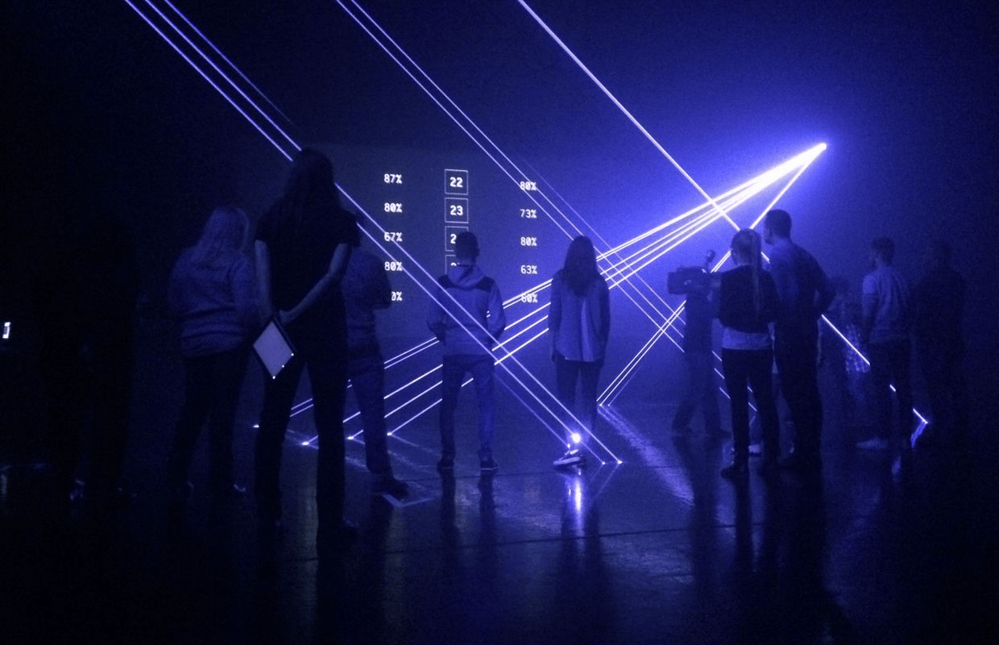

OPTIMUM PARK™ was an immersive performance piece — part art installation, part controlled chaos — presented in Belgium and at the Palais de Tokyo in Paris. It brought together poetry, dance, song, noise music, digital art, and destruction, staging them together for ~50 participants at a time.
How it worked: participants arrived and were assigned a number — their identity for the duration of the experience. An automated voice called numbers and directed "subjects" to stations scattered through the space. Some stations had computers. Others had people. The tasks spanned a wide range: write poetry, follow a stranger, paint books black, sing, play noise music, shoot a paintball gun, throw glass bottles at a smoke-filled void, destroy a car with a baseball bat. The experience escalated through three levels of intensity, with a leaderboard and elimination for non-compliance.
I was responsible for all the software. The entire show ran automatically — timing, lighting, music, the voice, the big screen, 20 networked terminals, tablets for the station operators, fog machine, lasers. Ozymandias was the task engine at the center of it: a Node.js library managing subjects, stations, levels, and task sequencing across a live session. It also includes a simulation module so the full flow could be tested without requiring 50 people.